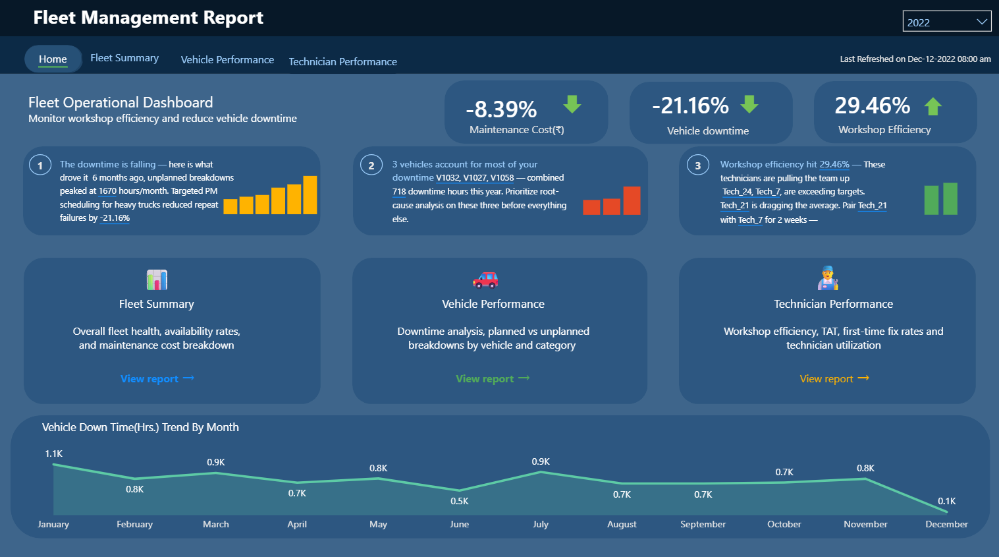

Fleet Management Dashboard
2021–2023Built Power BI reports integrating SQL Server, Excel, and SharePoint to monitor fleet KPIs. The solution improved workshop efficiency by 30% and reduced vehicle downtime by 25% through reporting visibility, profiling checks, and performance-tuned T-SQL extraction logic.